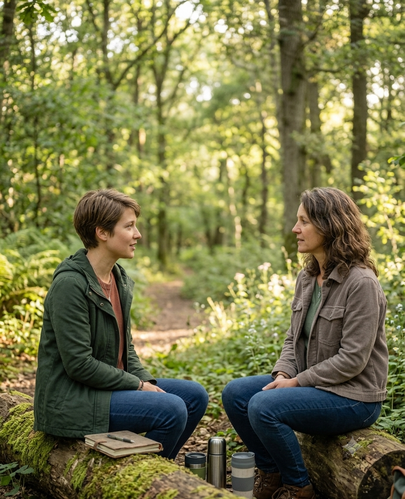

Wenn alles
zu viel wird.
Ich helfe Berufstätigen, Stress effektiv zu regulieren und Resilienz aufzubauen, die im Alltag trägt.
Jetzt Kontakt aufnehmen →Sie funktionieren nach außen.
Alles geht, bis nichts mehr geht.
Ihr Kopf läuft auf Hochtouren und lässt Sie nicht zur Ruhe kommen. Der Körper signalisiert Anspannung aber erholt sich immer schlechter. Und trotzdem machen Sie weiter, weil Sie es müssen. Vielleicht fragen Sie sich, wie lang das noch gut geht?
Der Kopf schaltet nicht ab
Gedankenschleifen, Overthinking, permanente Erreichbarkeit — auch nach Feierabend.
Der Körper unter Strom
Verspannungen, Schlafprobleme, Stimmungsschwankungen. Erschöpfung trotz Urlaub.
Selbstfürsorge bleibt Theorie
Sie wissen, was gut täte — finden aber keine Zeit. Sie kümmern sich um andere, kommen dabei aber selbst zu kurz.
Wie ich arbeite und was Sie erwarten können
Ich begleite dauerbelastete Berufstätige mit einem integrativen Coaching-Ansatz zurück in Ruhe und Erholung, damit Resilienz entsteht, die im Alltag trägt. Die Arbeit in der Natur ist dabei eine zentrale Säule.
Dabei schaue ich auf Sie als Person, Ihre Geschichte und Ihr Umfeld: Ihre Rollen, Beziehungen, Erfahrungen und Stärken. Was funktioniert bei Ihnen bereits? Was hat früher geholfen? Wo liegen Ihre echten Stärken?
Eine natürliche Umgebung wirkt dabei wie ein Katalysator in sämtlichen Phasen des Coaching-Prozesses. Der Kern zeigt sich schneller, die Dinge kommen leichter in Bewegung, Perspektiven und Lösungen öffnen sich, die im Coaching-Raum manchmal lange verschlossen bleiben.
Neugierig, wie ich dazu gekommen bin?
Mehr über mich erfahren →
Was ich Ihnen anbieten kann
Alle Formate sind einzeln und auf Anfrage als Paket buchbar. Wir klären im Erstgespräch, was für Sie gerade am meisten Sinn ergibt.
Einzelsession
Online oder in meinem Coaching-Raum in Köln. Wir arbeiten mit bewährten Methoden an dem, was Sie gerade beschäftigt.
Einzelsession outdoor
Der spürbare Abstand zum Alltag und die natürliche Umgebung fördern tiefgreifende Impulse bei hartnäckigen Themen.
Kurs: Stress, Erholung, Resilienz
Strukturiertes Kurs-Programm mit interaktiven Selbstlernmodulen und live-Coaching-Sessions. Für alle, die Stress-Kompetenz und Resilienz systematisch stärken wollen.
Einblicke ins Outdoor-Coaching


„Coaching ist für Leute, die nicht funktionieren."
Das ist meistens der erste Gedanke. Meistens stimmt er nicht. Coaching braucht kein akutes Problem als Eintrittskarte. Sie müssen auch nicht erst zusammenbrechen, um sich Unterstützung zu holen.
Das Einzige, was Sie müssen, ist sich selbst die Erlaubnis dazu geben.
Das sagen meine Klientinnen und Klienten
Echte Rückmeldungen nach dem Coaching mit mir
Zu Beginn war ich skeptisch, ob Denkanstöße und gezielte Fragen wirklich ausreichen können, um innere Veränderungen anzustoßen. Doch bereits nach den ersten beiden Terminen war diese Skepsis wie weggewaschen. Ich war beeindruckt, welchen Einfluss wenige, aber präzise Impulse auf mein Mindset hatten.
Ganzen Bericht lesen →Statt einer schnellen Patentlösung habe ich etwas Besseres bekommen — ein echtes Verständnis dafür, warum Entscheidungen mich so viel Energie kosten, und praktische Werkzeuge, die ich seitdem selbstständig nutze. Besonders überrascht hat mich die Erkenntnis, dass an mir gar nichts „repariert" werden musste.
Ganzen Bericht lesen →Ich war skeptisch, ob ein Coaching in der Natur wirklich etwas verändert. Aber schon nach den ersten Minuten draußen hat mein Kopf aufgehört zu kreisen — das war neu für mich. Katharina hat mein Thema aus verschiedenen Winkeln beleuchtet und mir konkrete Tools mitgegeben, die ich seitdem wirklich nutze. Besonders ein Werkzeug hat mir geholfen zu verstehen, wie ich das, was ich bisher als Problem gesehen habe, als Stärke einsetzen kann. Am Ende der Session hatte ich ein klares Gefühl: Ich weiß jetzt, was ich damit mache.
Das kann Coaching mit mir bewirken
Diese Coaching-Fälle wurden anonymisiert und mit Einverständnis veröffentlicht
Vom Mitläufer zur Führungspersönlichkeit
Ramon N., Nachwuchsführungskraft, Mitte 20: Er wollte nicht mehr ins Operative zurückrutschen und auf Impulse von außen angewiesen sein — sondern wirklich führen. In drei Sitzungen arbeiteten wir an Zielbild, Selbstwahrnehmung und konkreten Strategien.
„Die Gespräche haben mir Mut gemacht, mir Klarheit gegeben und mir gezeigt, dass ich auf dem richtigen Weg bin."
Vom Overthinking zum wertschätzenden Dialog
Klient, IT-Unternehmer, Mitte 30: Jede Entscheidung kostete ihn übermäßig viel Zeit, Energie und Nerven — im Prozess und danach. In vier Sitzungen arbeiteten wir mit Mentaltechniken, dem Modell des Inneren Teams und dem Werte- und Entwicklungsquadrat.
„Mein inneres Team ist genau so gut, wie es ist."
So arbeite wir zusammen
Erstgespräch
Wir lernen uns kennen, ordnen Ihr Thema ein. 20–30 Minuten, kostenlos und unverbindlich. Sie entscheiden danach frei, ob und wie Sie weitermachen möchten.
Coaching-Sitzungen
Outdoor, im Coaching-Raum oder online. Sie bestimmen das Thema, ich bringe Struktur, Methoden und Fragen mit. Jeder Sitzung generiert konkrete Impulse.
Transfer in den Alltag
Am Ende schauen wir gemeinsam zurück: Was hat sich verändert? Was nehmen Sie mit? Der Transfer in den Alltag ist ein wesentlicher Teil des Prozesses.
Was Sie vor dem nächsten Schritt wahrscheinlich wissen möchten
Coaching ist immer dann sinnvoll, wenn Standardlösungen nicht funktionieren. Wenn Sie individuelle Antworten brauchen, die Ihnen als Person und Ihrer konkreten Lebenssituation Rechnung tragen.
Was das konkret bedeutet, hängt vom Thema ab: mehr Klarheit über das, was Sie antreibt oder aufhält. Neue Perspektiven auf festgefahrene Situationen. Konkrete Strategien für den Alltag. Oder einfach Raum, um laut zu denken — ohne Konsequenzen.
Coaching setzt voraus, dass Sie aktiv an der Veränderung Ihrer Situation mitwirken können. Es ist keine passive Behandlung, sondern ein gemeinsamer Arbeitsprozess.
Als erste Einschätzung hilft folgende Frage: Geht es Ihnen darum, eine Veränderung aktiv zu gestalten – beruflich oder privat – und haben Sie das Gefühl, die nötigen Ressourcen dafür grundsätzlich in sich zu tragen, brauchen aber einen strukturierten Rahmen und einen neutralen Sparringspartner, um klarer zu sehen und ins Handeln zu kommen? Dann ist Coaching in der Regel ein passendes Format.
Eine gute Orientierung, aber keine Diagnose – das kann Ihnen auch das ein Erstgespräch geben.
Outdoor-Coaching ist kein Spaziergang, bei dem Sie sich nett mit einem Coach unterhalten. Es ist methodisch genauso professionell aufgebaut wie Coaching in Praxisräumen — findet aber bewusst im Freien statt, weil die natürliche Umgebung den Prozess auf eine Weise unterstützt, die ein Coaching-Raum nicht kann. Im Outdoor-Coaching ist die Natur sowohl Raum als auch aktiver Bestandteil des Coaching-Prozesses und wird bewusst in Übungen, Reflexionen und Gespräche einbezogen.
Die Forschung zeigt: Aufenthalte in der Natur senken nachweislich den Cortisolspiegel, verbessern Konzentration und Aufmerksamkeit und fördern die emotionale Selbstregulation. Bewegung löst körperliche Anspannung. Der Ortswechsel durchbricht eingefahrene Denkmuster. Und die Natur liefert Metaphern, die im Gespräch oft präziser treffen als es Worte können.
Nein. Outdoor-Coaching bei mir bedeutet keine Wanderung mit Strecken- und Höhenprofil. Wir bewegen uns in einem Tempo, das zu Ihnen passt. Im Vordergrund steht die Bearbeitung Ihres Themas, nicht das Ablaufen einer Wegstrecke. Wir gehen meistens gemächlich und machen Pausen.
Geeignete Orte in und um Köln lassen sich gut per ÖPNV erreichen. Falls Sie körperlich eingeschränkt sind, finden wir gemeinsam eine passende Lösung.
Weitere Fragen und Antworten zum Coaching finden Sie in den FAQ →
Melden Sie sich.
Ich antworte persönlich.
Schreiben Sie mir, was Sie beschäftigt und ich melde mich innerhalb von 48 Stunden zurück. Das Erstgespräch ist kostenlos.
Ich melde mich innerhalb von 48 Stunden bei Ihnen.
Sie möchten direkt einen Termin buchen?
Über meetergo können Sie direkt einen Termin für ein kostenloses Erstgespräch wählen.
Termin buchen ↗info@coaching-mit-k.com
Standort
Köln — Sessions online, im Coaching-Raum Köln und in der Natur.
Kennen Sie jemanden, dem das helfen könnte?
Viele meiner Klientinnen und Klienten kommen über persönliche Empfehlungen. Wenn Sie jemanden kennen, der gerade unter Druck steht und nicht mehr so recht weiß, wie er wieder zu sich findet, leiten Sie diese Seite einfach weiter. Das kostet nichts und kann viel bewirken.